Some random observations - I invite your comments. First two frames I’m looking at the knees at the catch and connection. I am looking for the blades touching the water when the shins are vertical. I know that we can compress a bit more but I think the trade off is not worth it: it risks stalling the seat before the blade touches the water, and thus slowing down the boat. The next frame looks at the shins when the blades are in the water and connect. We are looking to connect early with little leg drive - this requires looseness to enter quickly and patience for the connection. These contradicting requirements make the catch difficult and too much talk about quickness can blur this.
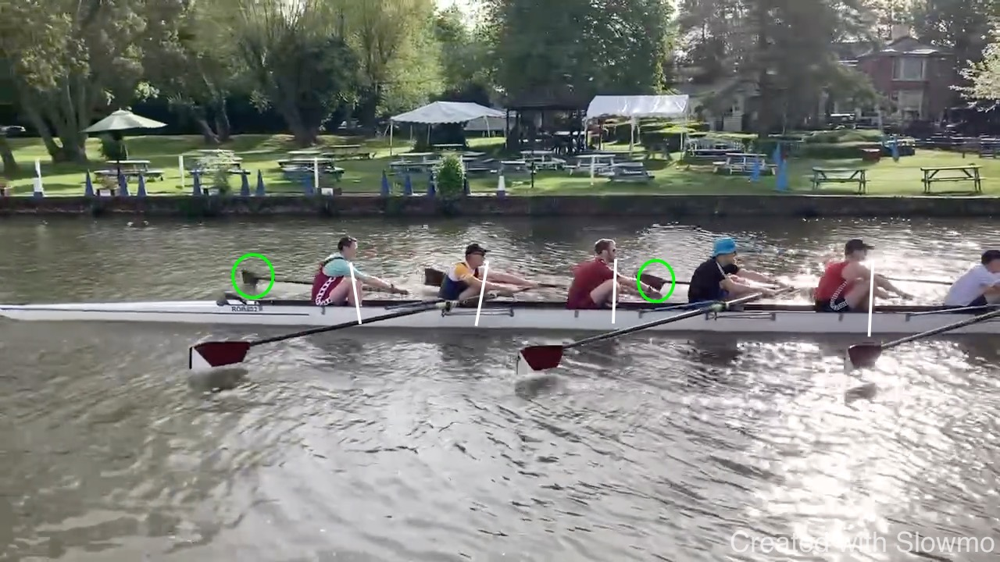
Next, a relaxed, straight outside arm in the drive. We want to avoid working with weak muscles or strong muscles from the legs against weak muscles in the arms.
Keeping the arms relaxed is in part an exercise in mental relaxation but in part a consequence of the sequence. If the body opens early, it is difficult to avoid using the arm towards the finish. In the early part of the drive we want to “keep the handle out” - not bringing the handle towards us but pushing the boat - and letting the handle come to us.
 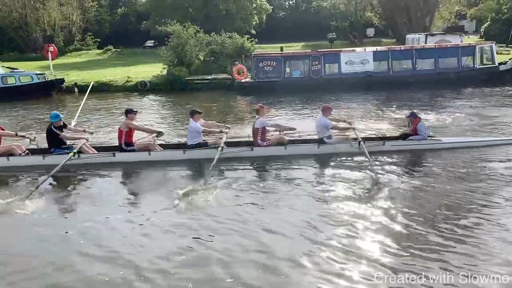
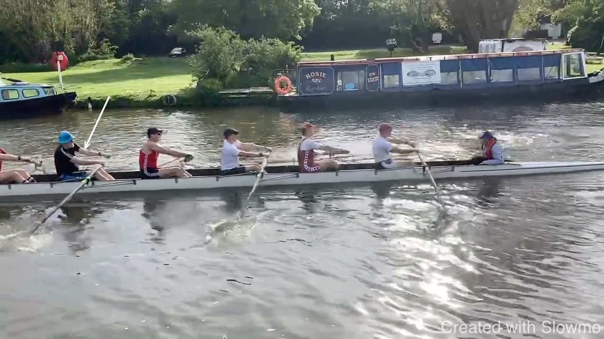
We want to rock over the hips: “up and over”. This pushes the seat slightly back. If we don’t do this and just bring the shoulders forward, it is difficult to find the length at the front.
While we rock over, we want to keep the knees down. However, only once the knees do come up, we can complete the rock over.
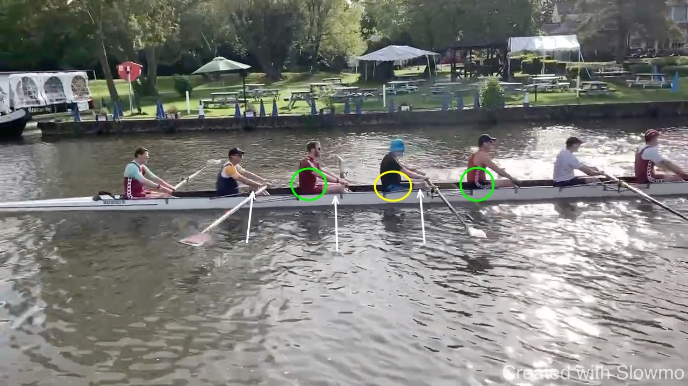 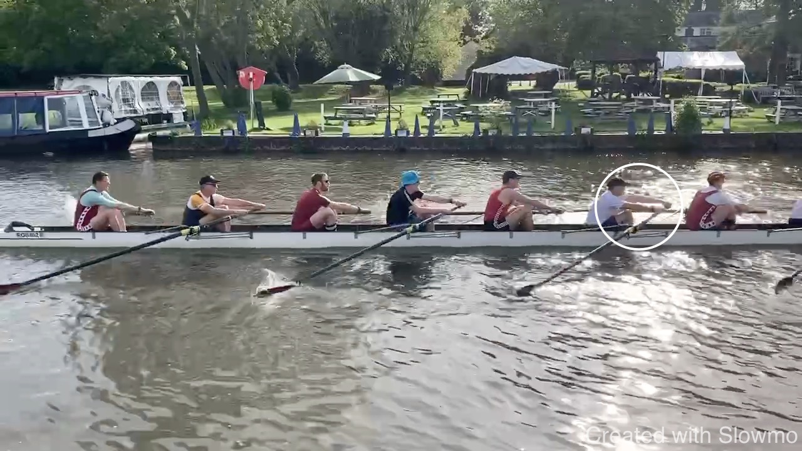
Stern 4 don’t agree about the recovery speed for the hand. I don’t think one style is inherently superior but we need to agree. Again, I believe shins-vertical is an important point where the blade should be ready to enter. For this it is important to let the recovery by led by the hand rather than the seat.
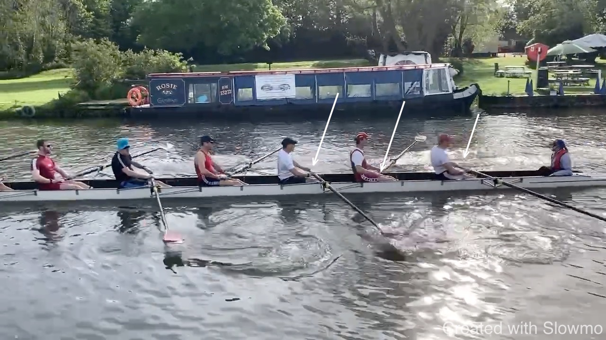
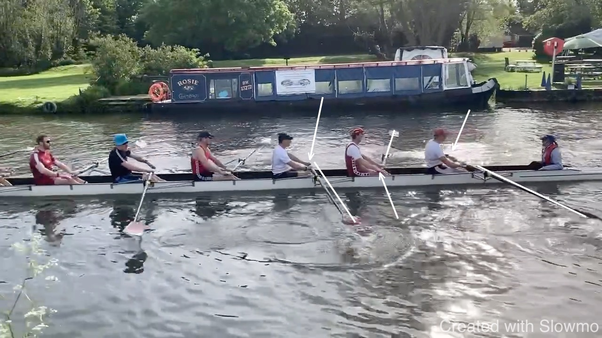
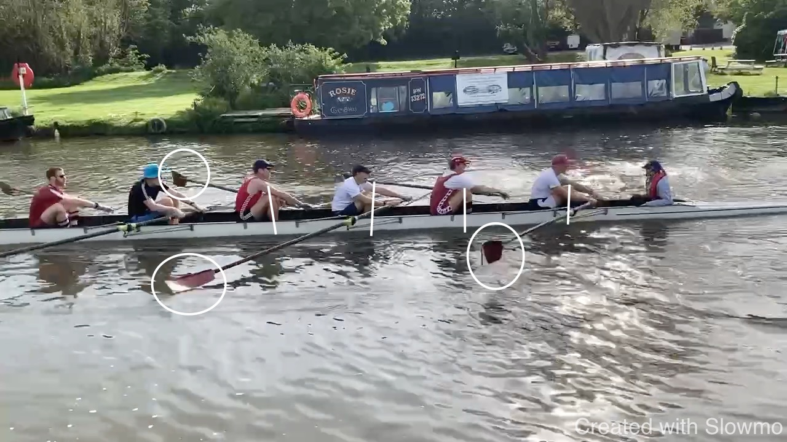

We want to avoid that the boat stays attached to the blade at the finish and instead is released. This works well.
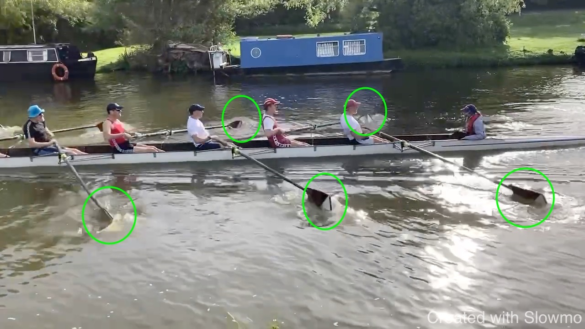
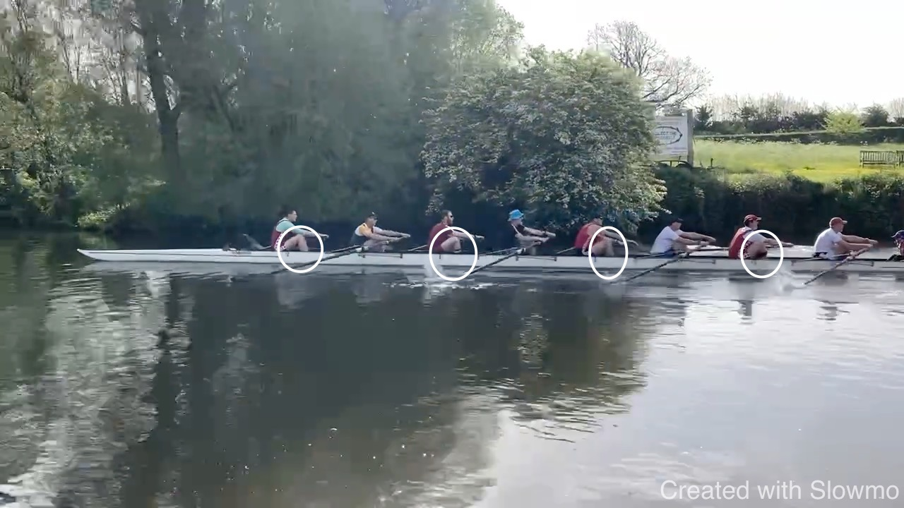 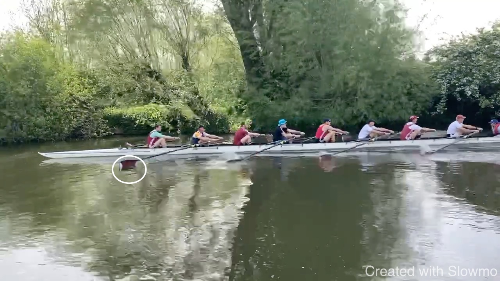